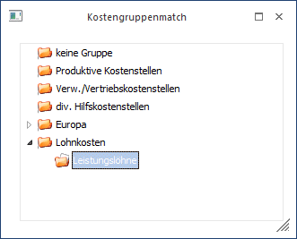
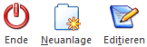

In diesem Fenster kann nach bereits angelegten Gruppeninformationen gesucht werden, z.B. Kostenträgergruppen, Kostenstellengruppen, Kostenartengruppen. Alle Gruppen werden in einer Baumstruktur dargestellt. Durch Klicken auf das Symbol wird ein Ast geöffnet und die darunterliegenden Einträge werden sichtbar. Durch Klicken auf das Symbol (wird bei aufgeklappten Einträgen sichtbar), wird der Eintrag wieder geschlossen.
Durch einen Doppelklick auf den gewünschten Eintrag (oder Bestätigung mit der Entertaste) wird dieser in das Eingabefeld übernommen.

Buttons

Ø Ende
Schließen des Fensters.
Ø Neuanlage
Durch Anklicken des Neu-Buttons (oder der Tastenkombination Alt + N) kann das Kostengruppenfenster zur Neuanlage einer Kostengruppe aktiviert werden.
Ø Editieren
Mit dem Editieren-Button (oder der Tastenkombination Alt + T) können Sie in das Kostengruppenfenster gelangen um bereits vorhandene Kostengruppen zu editieren.